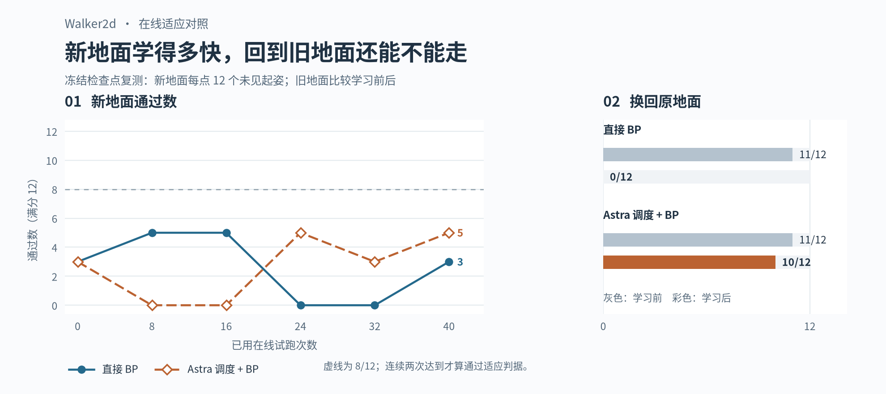
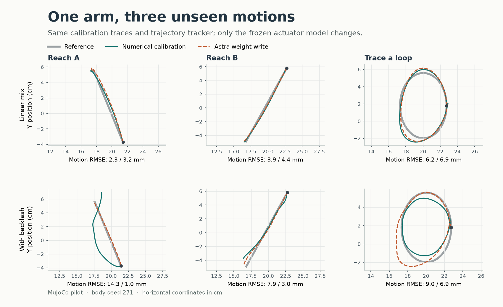

EXPERIMENT GALLERY
具身神经生长
同样的交互预算，把试错写进权重，还是写成代码？
01 · H1 遭遇侧推
录像里的地面蓝线是参考朝向，不是指定路线。先区分「没有倒」和「速度与朝向都恢复」。
02 · 从双足步态到权重手术
先看能不能走，再检查修补一个起姿时，原来会走的起姿有没有退步。

WALKER2D · 在线 BP
新地面学得怎样，旧地面还会走吗？
40 次交互后，两组都没达到稳定适应门槛。换回旧地面，Astra 调度组通过 10/12，直接 BP 通过 0/12。
学习曲线和逐局记录03 · 从试探电机到双臂排数字
机械臂没有 W 路线；双臂对照保留原生评分，画面上的摆放不等于任务通过。
双臂 · PHYS EVO / PYRUA-RSI
同题复建与冻结程序校验
PhysEvo 同题试跑分别归档权重路线与代码路线；PyRUA-RSI 的 100 分来自冻结程序，作为环境校验。
代码路线录像 冻结程序录像 PhysEvo 记录 PyRUA-RSI